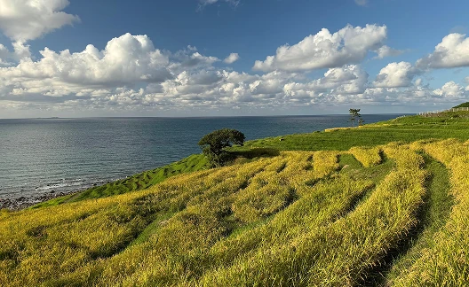
 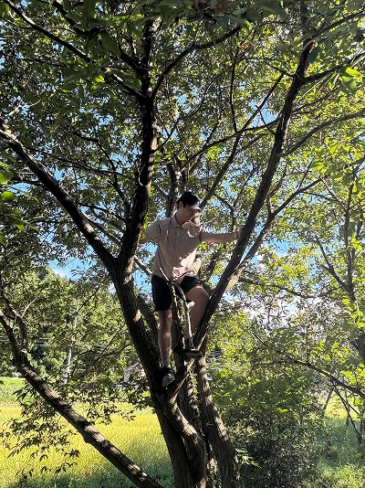
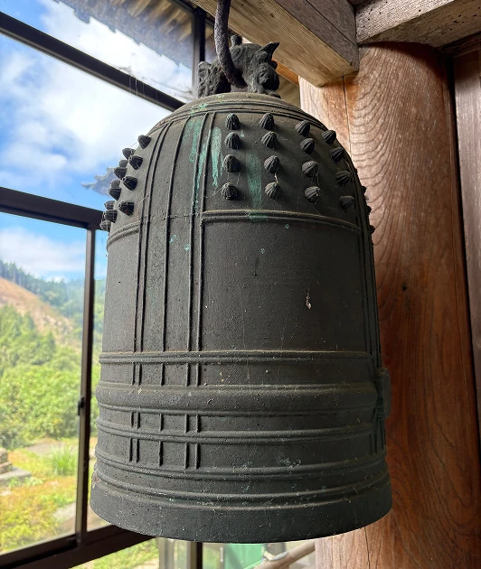
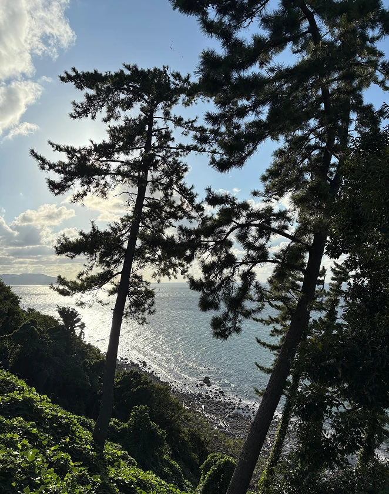
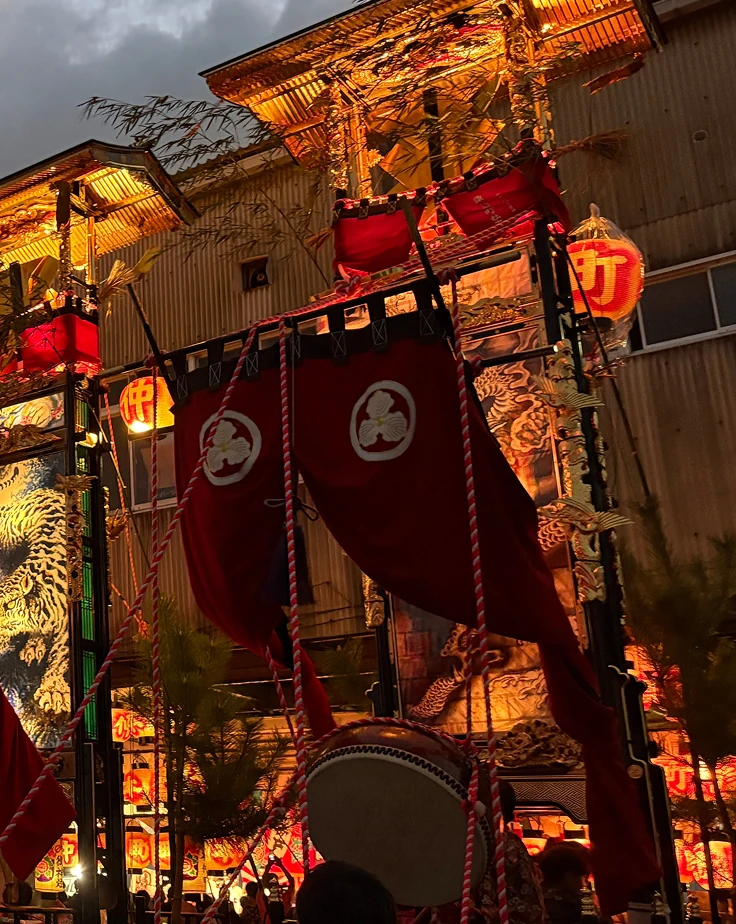
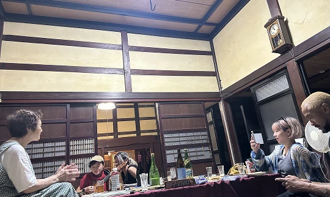
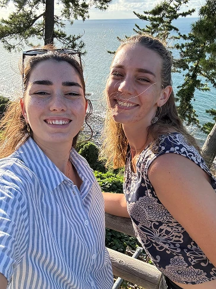
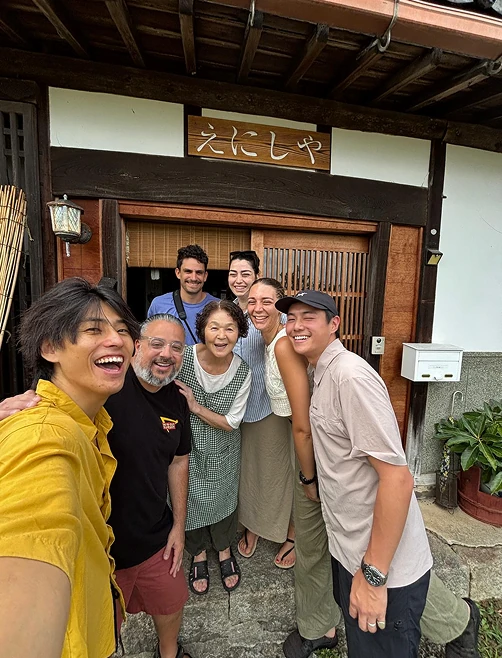
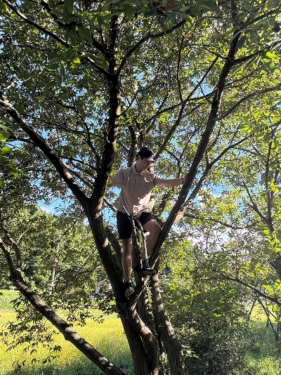
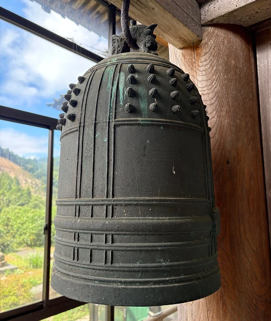
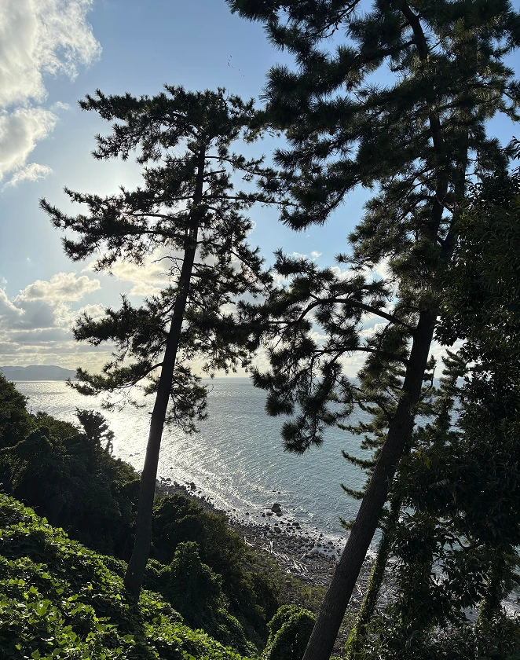
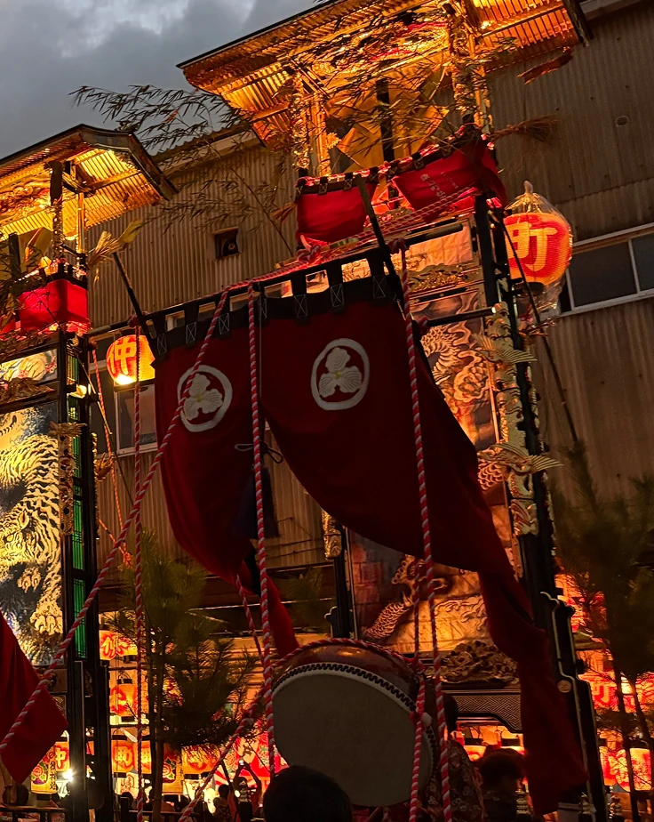
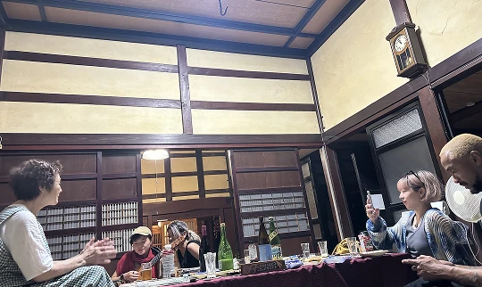
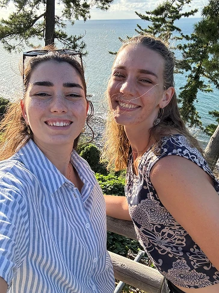
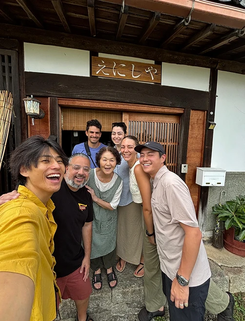
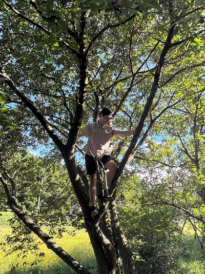
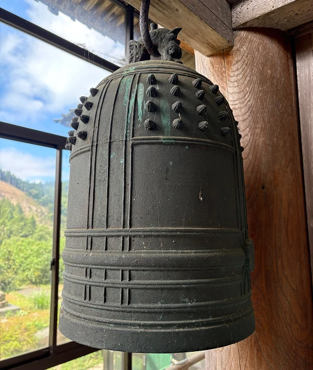
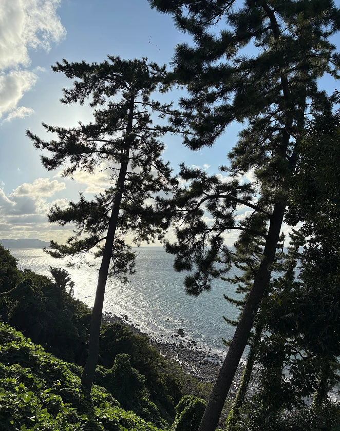
The Japan guidebooks can’t show you.
なぜ能登はおもしろいのか


里山里海の豊かさ
世界でもまれに見る地形が、
能登だけの景観をつくってきた。
一日の中にいくつもの特別な風景がある。


里山里海の中で人が育てた文化
里山里海と人が重なり合ってできた、共に生きる文化。
訪れる人をやさしく迎え入れてくれる。


自然と人が一体となって生きる文化。
それが能登。
観光地ではなく、暮らしそのものを体験できる場所。

完全版「能登ノマド」ガイドを入手しよう
すべてのスケジュール、地図、ヒントは
すでに私たちのDiscordの中にあります。
アクセス
都市部から数時間でアクセスできる、日常から離れた場所

羽田 → 能登里山空港（飛行機）
- 羽田 → 能登里山空港：約1時間
- 空港 → 七尾市内：車で40〜50分
東京 → 金沢 → 七尾（新幹線＋電車）
- 東京 → 金沢：北陸新幹線（約2時間30分）
- 金沢 → 七尾：JR七尾線（約60〜80分）
大阪 → 敦賀 → 金沢 → 七尾（特急＋北陸新幹線＋電車）
- 大阪 → 敦賀：特急サンダーバード（約1時間20〜30分）
- 敦賀 → 金沢：北陸新幹線（約1時間）
- 金沢 → 七尾：JR七尾線（約60〜80分）
七尾 → 能登エリア各地（車）
七尾 → 能登島・穴水・珠洲など車で20〜40分。
移動そのものが景色になる距離です。

利用者の声
Instagramでフォローする
コミュマネ紹介
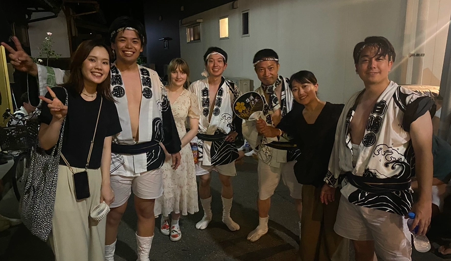
世界を旅してきたノマドが、能登であなたの生活をサポートします！
困ったときも、ちょっと話したいときも、気軽に声をかけてください。